The Trumpet
The Trumpet is a daily news baised website. The challenge for this project was to rebrand it completely and turn it into a fashion and beauty website. Luxury and simplicity was the main inspiration for this website design. grey pallete with combination of proffesional fashion photos gave a simple, yet luxurious look to the website. Large images, simple text, and dark background is how I approached this project.
- shape
- luxury
- elegance
- simplicity
Programs
- Sketch
- Photoshop
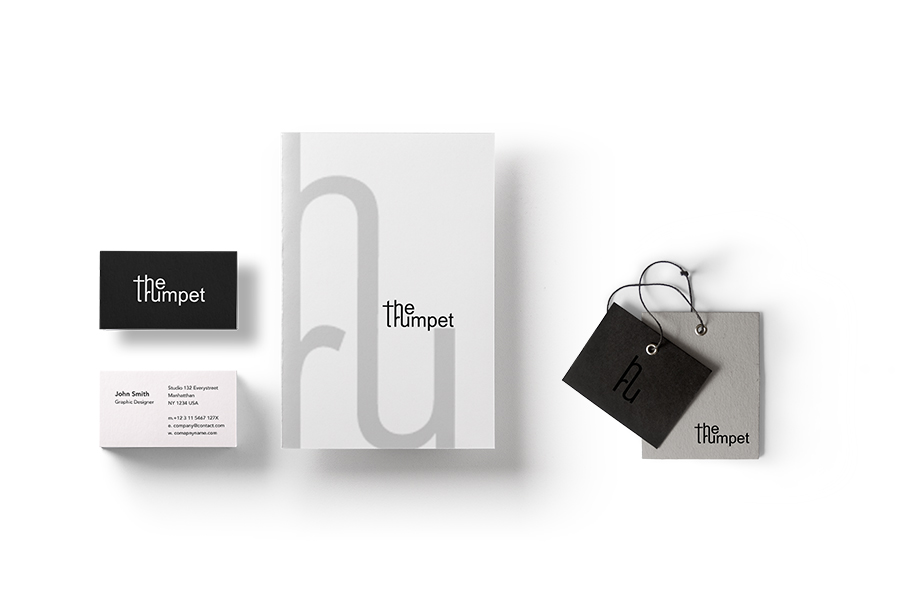
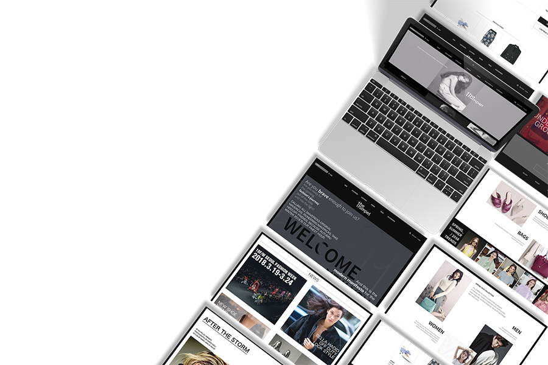
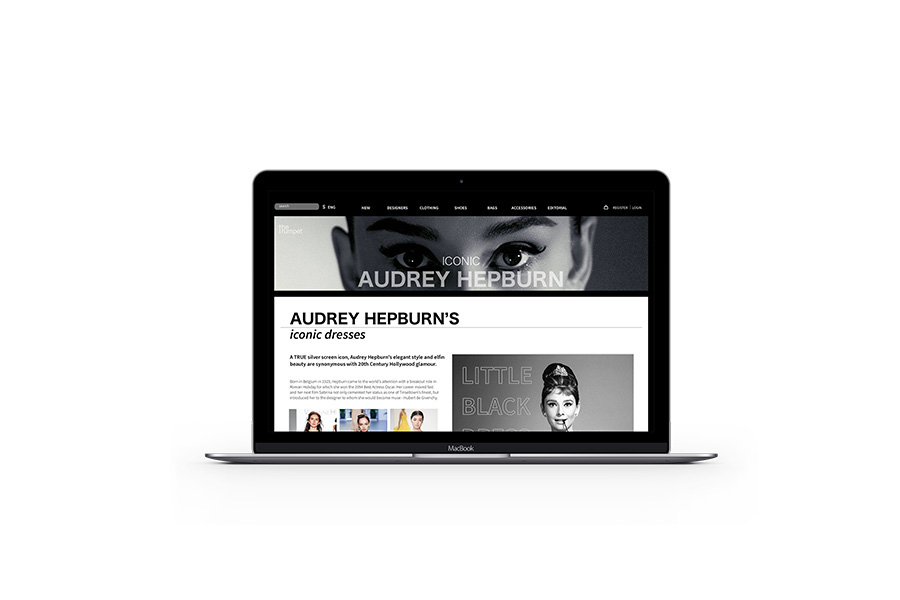
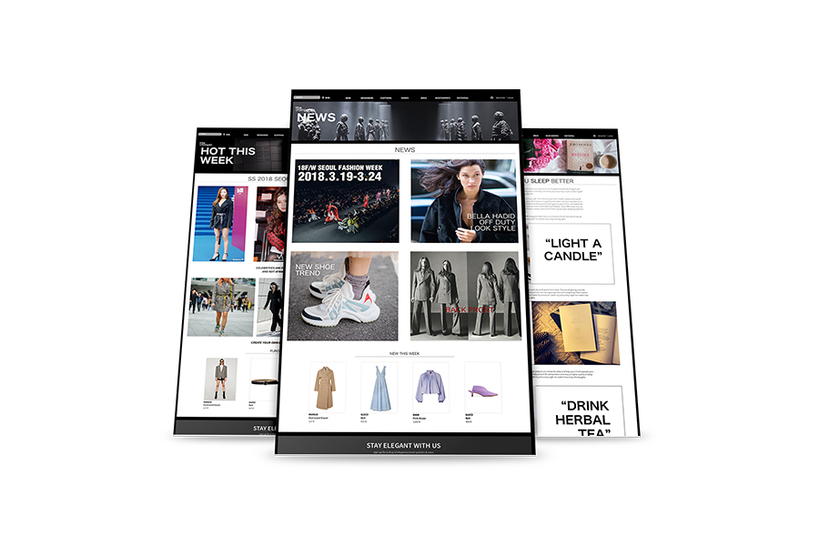
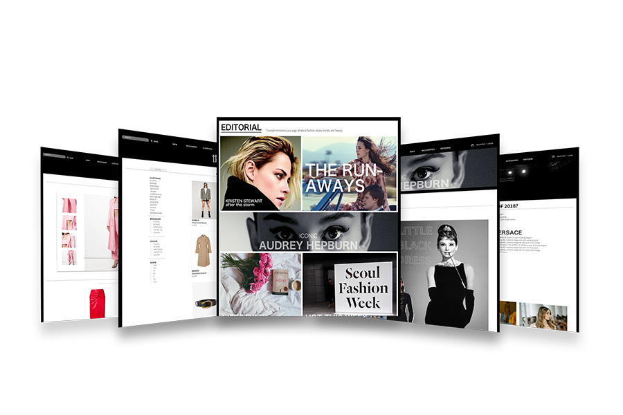
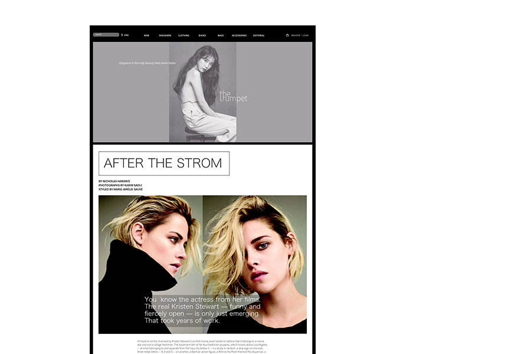
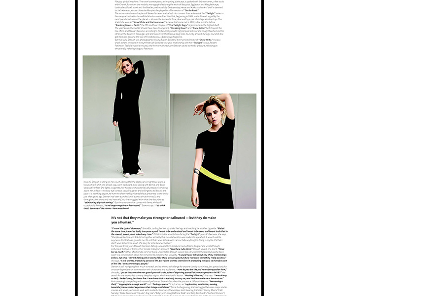
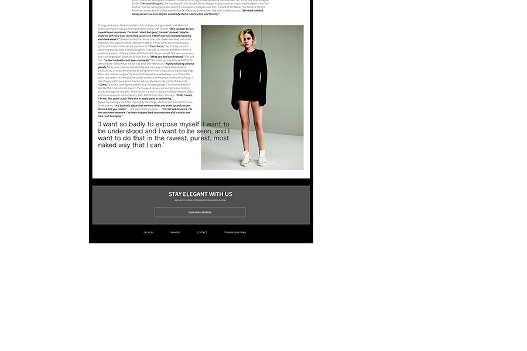
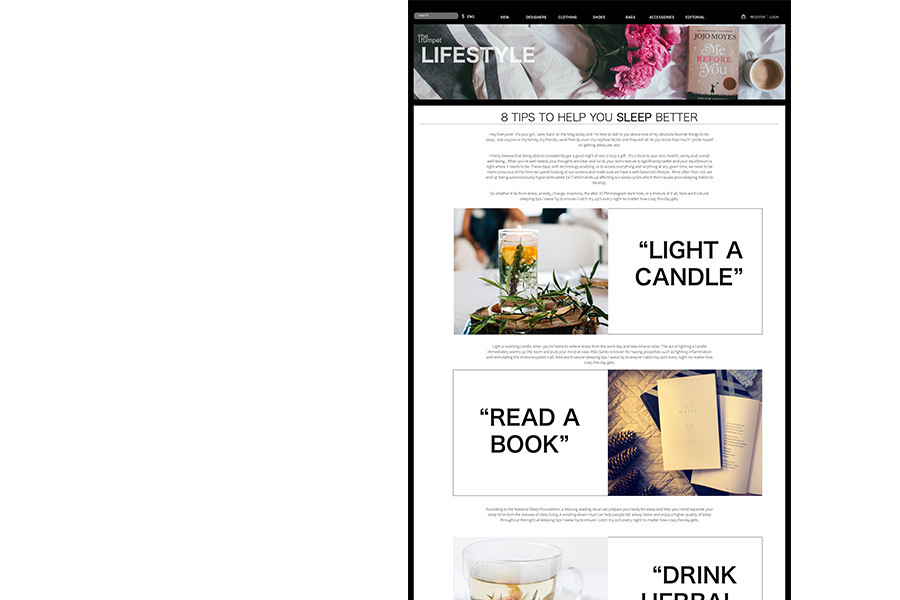
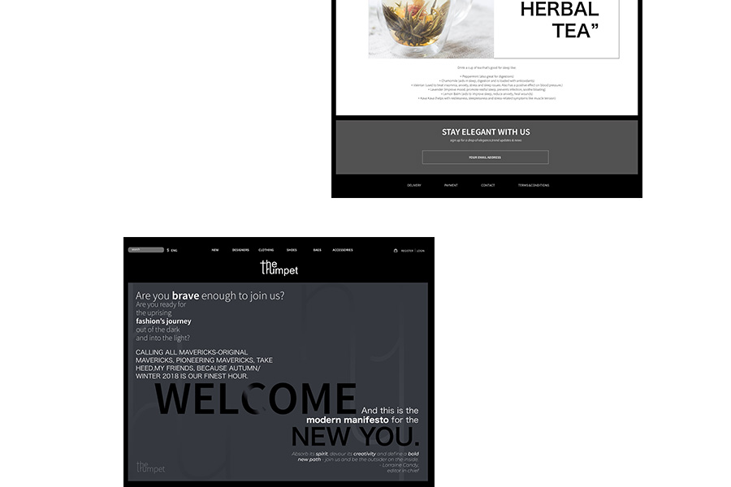
 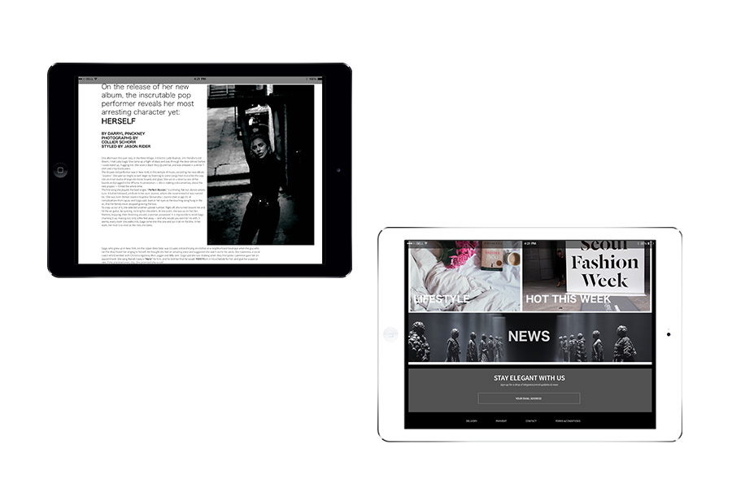
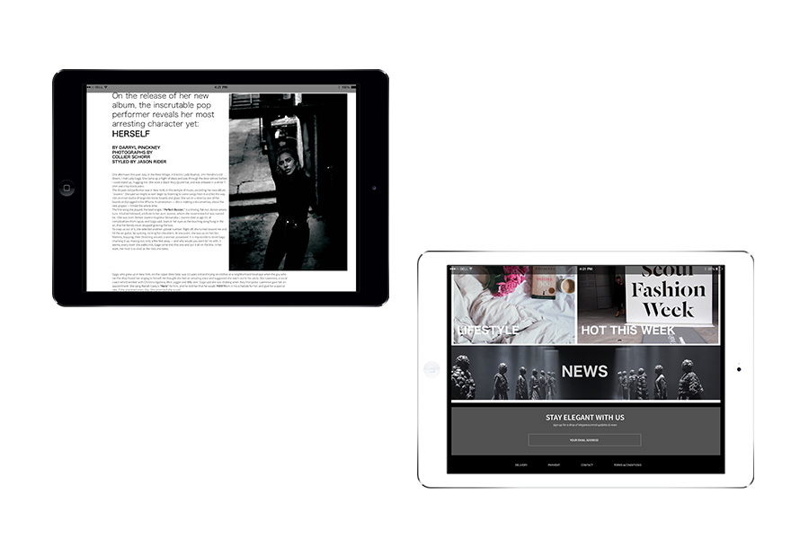
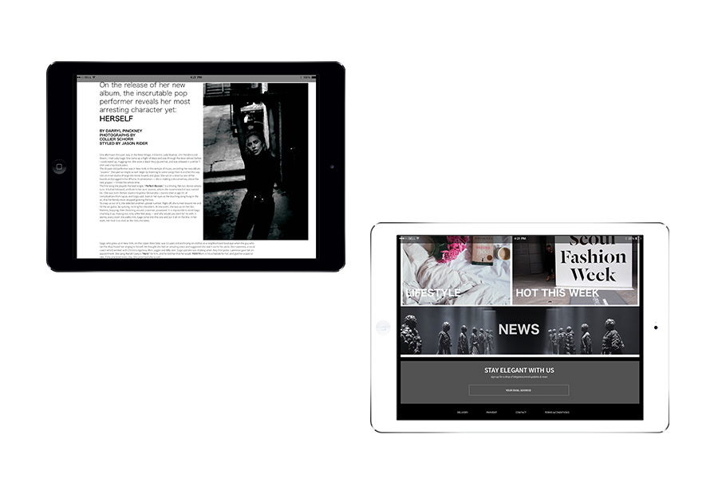